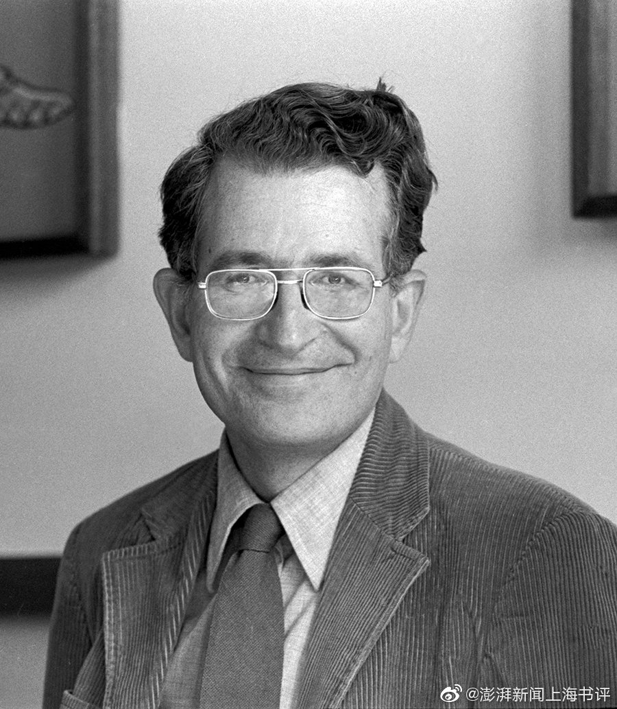

@澎湃新闻上海书评:
#911事件20年# 【911思想考古丨乔姆斯基：“正义战争”与“恐怖主义”】 911思想考古丨乔姆斯基：“正义战争”与“恐怖主义”
911思想考古丨乔姆斯基：“正义战争”与“恐怖主义”
【乔姆斯基最新访谈：回顾20年，美国反恐战争让世界分崩离析】乔姆斯基最新访谈：回顾20年，美国反恐战争让世界分崩离析
美国语言学家、政治活动家、麻省理工学院荣休教授乔姆斯基不遗余力批判美国的全球霸权，自9·11事件以来，写就多篇文章或访谈反思美国的反恐战争，收录于《9-11: Was There an Alternative?》。近日，就美国从阿富汗撤军和二十年来的反恐战争，乔姆斯基再度接受访谈，从布什主义谈起，揭露美国的反恐战争如何使整个中东四分五裂。
【乔姆斯基最新访谈：回顾20年，美国反恐战争让世界分崩离析】
美国语言学家、政治活动家、麻省理工学院荣休教授乔姆斯基不遗余力批判美国的全球霸权，自9·11事件以来，写就多篇文章或访谈反思美国的反恐战争，收录于《9-11: Was There an Alternative?》。近日，就美国从阿富汗撤军和二十年来的反恐战争，乔姆斯基再度接受访谈，从布什主义谈起，揭露美国的反恐战争如何使整个中东四分五裂。
- 